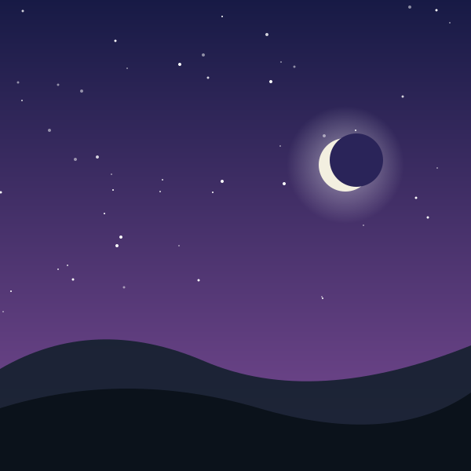
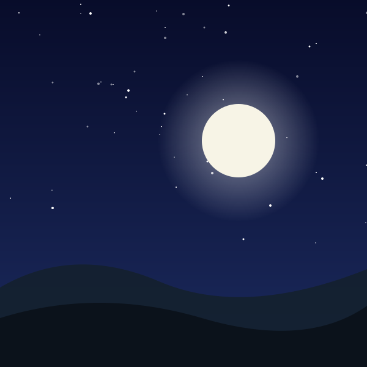
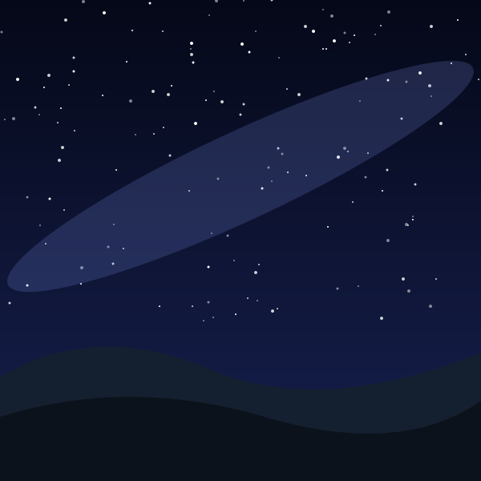

This little gallery follows one imaginary landscape from first light to deep night. Each illustration shows the same rolling hills under a different sky, so you can watch the colors shift from the soft orange of dawn to the bright blue of noon and on to the purples of dusk.
The page adapts to the screen you are using and to your device settings. It shows one column on phones, two on tablets and a looser three-step rhythm on large screens. It also switches to dark colors if your system prefers them, and it stops smooth scrolling if you have asked for reduced motion.


